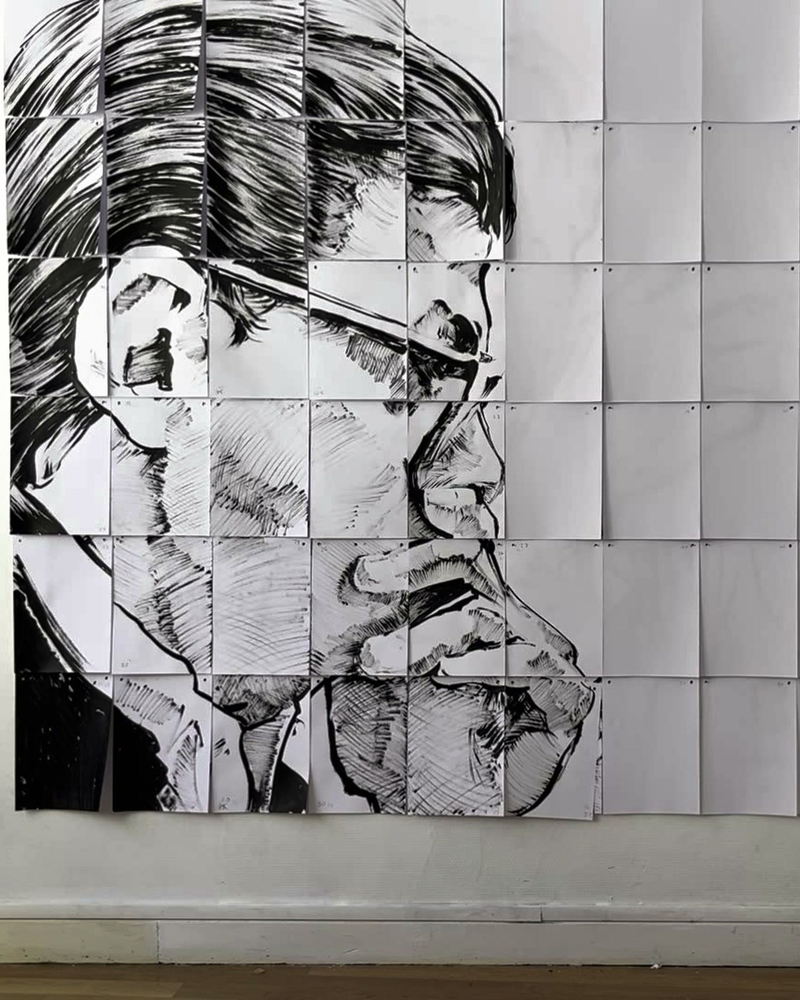

“… denn jeder ist die Welt”
Nikolaisaal Potsdam · with Merlin Rainer and KAPmodern
01 / 26
Over two months, the painter Merlin Rainer and concept artist Maxim M. Chubarov work with partners on site to find out how a drawn world becomes a room that responds to bodies, sound and the people in it.

On 28 October 2026 we presented “… denn jeder ist die Welt” (“… for everyone is the world”) with the ensemble KAPmodern of the Kammerakademie Potsdam at the Nikolaisaal Potsdam, an evening we had developed for and with them. On every seat lay a quarter sheet, a fragment of one large drawing by Merlin, and on the wall hung a grid of squares marked with letters. In the interval people queued to bring their sheet to the matching square, and by the end of the break the wall showed a double portrait of the composer Morton Feldman and the painter Philip Guston, whose friendship the evening had told in drawings. We had not expected the queues. People had followed the story through the first half, and in the interval they put its picture together.
For the residency we bring one question: how does a drawn world become a room that responds to bodies, sound and the people in it? It holds at each of the hosts we have chosen, and it leaves room for what we find there. We take in impressions, stories and themes on site, in conversation with the host and with dramaturgs, musicians, performers or collectives. The thread and the frame of the piece we set ourselves.
Merlin Rainer is a painter who is developing towards animated film. He draws real people and places in pencil, graphite and ink. Maxim M. Chubarov shares the research and the dramaturgy with him and develops the technology that extends these drawings into a room: projection onto the architecture, light, sound, tracking, live control, or an installation that visitors walk through. The room always grows out of Merlin's drawn world. We research the material together and develop it with the people we meet on site, and in the end with the audience.
In Potsdam every image on the wall came from Merlin's hand. We developed the story of the evening together, and Maxim worked out how the drawings would respond during the concert. A camera followed the cellist, and Merlin's drawn measuring marks moved with her. His ink waves changed with the loudness of the music, picked up by microphones. The projection was mapped across the screen and the columns of the hall, and the lighting followed the running order. These moments are where our question comes from.
Drawing gives us a lot of freedom. We can jump through time, place two biographies next to each other, explain what we have learned and let fantastic things happen. It also creates distance, and in our experience that distance gives people a way in, even to heavy subjects. With Feldman and Guston we chose to give an impression of their friendship and left many details out. Merlin's films show this too. In Upload DDR phone screenshots become graphite drawings. UP-TEMPO POLITICS draws the Hardtekk scene from real interviews with young people who are connected by the music while holding very different political views.
Whether the room is immersive or interactive, or mainly gives information, depends on the material. The audience should always find an easy way in, and usually gets something to do.
We met in the artist collective WERT (German for “value”), which Maxim founded and whose method he developed together with its members. For seven years the collective ran self-organised residencies, one week in one place, each year around one term that every member tested in their own field. Every year added one more step. Together the seven steps describe how artistic value is created collectively, from the first question to the presentation, and we still work along them:
In the residency, the first three steps belong to the research weeks, the next two to production, and the last two to the run-throughs and the presentation.
Before we arrive, we talk with the host and possible partners and ask where a collaboration could fit into their plans.
Weeks 1–3: research on site, with meetings, places and archives. Merlin draws what we find, and we run first tests in the venue. At the end of this phase we decide together on the subject and the thread.
Weeks 4–6: production. Merlin draws and animates the material by hand, Maxim extends it into the room, and local partners add their own work, whether writing, music or movement. We rehearse together.
Week 7: run-throughs with test audiences.
Week 8: presentation at the host venue, and documentation of drawings, setup and running order, so the piece can be shown again.
If the host prefers, the residency can be split into three weeks of research and five weeks of production and presentation. In between, Merlin keeps drawing at home and Maxim prepares the technical setup.
We would work the same way at each of them, but the form of the piece would depend on the place. What follows are possible starting points; the subject itself takes shape in the exchange on site.
Onassis, Athens. ONX is looking for digital work with analogue qualities and for stage experiments. Here we could begin with a stage prototype, developed with performers and dramaturgs from Athens, in which the drawn world reacts to bodies. We already work with camera-based tracking; the motion-capture stage and multichannel sound would take this further. Skēnographía, the word behind scenography, literally means painting the stage. Aristotle names Sophocles as the one who brought scene painting to the theatre, and Vitruvius tells of the painter Agatharchus making a scene in Athens for a tragedy by Aeschylus.
werkleitz, Halle. werkleitz works on social issues and shows media art in public space. In Halle we could take a drawn world out of the venue and into the city, where people come across it by chance, for example around the themes of Merlin's film Upload DDR, as an exhibition or an intervention developed with people from the region.
gnration, Braga. With musicians from Braga we could develop an audiovisual piece for the black box, in which drawing and sound respond to each other from the start. In Potsdam the music was given and the drawings followed it; in Braga both could grow together. gnration's partners, among them the University of Minho and local collectives, would help us find the people to work with.
“… denn jeder ist die Welt” is our current stage. There, our story was written around a music programme that was already set, the responsive moments were single scenes, and the setup was built for one hall. In the residency, responding to bodies, sound and people becomes part of the dramaturgy from the first day. Local partners shape the material with us as co-authors. And the result is a form that can be rebuilt in other theatres, halls and galleries and shown again.
Selected works, newest first. Open any image to see it large. All drawings, letters and frames of “… denn jeder ist die Welt” by Merlin Rainer, drawn by hand in pencil, graphite and ink.
Nikolaisaal Potsdam · with Merlin Rainer and KAPmodern
Light installation · architecture Atelier ST
ZiMMT Leipzig · with Merlin Rainer
UT Connewitz Leipzig · with the GewandhausChor
Collective WERT · PARADIGMA
Nikolaisaal Potsdam · with Merlin Rainer and KAPmodern
Collective WERT · con:sens
Public space Leipzig · con:sens
culture.room Berlin · with Merlin Rainer and Peter Sipos
WERKSCHAU Spinnerei Leipzig · with Merlin Rainer
Our setup is flexible and adapts to the room and to the subject we find on site. At its core there is almost always projection and light: Merlin's drawings projected onto a screen, walls, architecture or objects, and light that shapes the room around them. Sound and sensors are added as the piece needs them. The setup below is a reference, not a fixed requirement.
| Merlin Rainer | Research drawings on site. All images by hand in pencil, graphite and ink, scanned and animated by hand. |
|---|---|
| Maxim M. Chubarov | Research and dramaturgy with Merlin, technical concept and show system: mapping, interaction, light, sound routing, running order, live operation. |
| Local partners | Dramaturgs, performers, musicians, authors or a collective, found with the host. They bring their own material and shape the piece with us. |
| Host team | Venue, rehearsal times, technical support, and where available motion capture and multichannel sound. |
Motion capture and multichannel sound are new to us. Where a host offers them, as at Onassis, we would learn them with the host's team and connect them to the show system.
The final setup depends on the room and on the subject chosen on site.
Painter and graduate of the Academy of Fine Arts Leipzig (HGB). He draws real people and places in pencil, graphite and ink and animates them by hand. His films Upload DDR and UP-TEMPO POLITICS take real, often politically charged subjects and make them accessible in a drawn world.
| 2026 | Diploma, Academy of Fine Arts Leipzig (HGB) |
| 2026 | Exchange semester at the Beaux-Arts de Paris, class of Clément Cogitore |
| 2023 | Two-month internship in the studio of Thomas Hirschhorn, then freelance work for him (April to October) |
| 2022 | Main studies in the class of Kerstin Drechsel, HGB Leipzig |
| 2020 | Studies in painting and graphics at the HGB Leipzig |
| 2026 | Max-Bresele-Memorial-Award, Regensburg Short Film Week |
| 2025 | HGB Leipzig Study Prize for Painting and Graphics |
| 2027 | KLAPPE AUF! film festival, Hamburg (upcoming) |
| 2026 | Interfilm, Berlin (upcoming) · MdbK Leipzig (upcoming) |
| 2026 | 38th Filmfest Dresden · Regensburg Short Film Week · Kurzsüchtig, Leipzig · Unicato Short Film Night, Jena · Kino in Bewegung, Pomßen · .mpeg art space, Leipzig |
| 2025 | Published on MDR and ARD Mediathek · Dokfest Kassel · doxs!, Duisburg · Si Cinéma, Caen |
| 2026 | “It's not about nothing. Episode 2”, GfZK Leipzig (group) · Diploma exhibition, HGB Leipzig · “Stendal-Süd”, former prefab housing estate Stendal-Süd (group) |
| 2025 | “STRANGE IN A FAMILIAR WAY”, Kunstverein Aalen · “Care/ta Care”, Tapetenwerk Leipzig · “GR/DS”, Ortloff Art Space Leipzig · Partizan*ke Art, HGB Gallery · Study prize exhibition, HGB Gallery |
| 2024 | Leipzig Light Festival, Augustusplatz Leipzig |
| 2023 | “Image Trash”, Galerie KUB Leipzig (duo) · “May I sit?”, SOX Berlin · “CLOAKROOM1305”, Beaux-Arts de Paris · “Transitional State”, Halle 14 Leipzig |
| 2022 | “EMIK”, Postwerk Berlin |
| 2026 | “… denn jeder ist die Welt”, Nikolaisaal Potsdam, with KAPmodern (Kammerakademie Potsdam) |
| 2025 | Hidden Heroes, ZiMMT Leipzig |
| 2023 | Metamorphose, Nikolaisaal Potsdam, with KAPmodern |
| 2022 | Supermotte, culture.room Berlin |
| 2021 | Resonanz, WERKSCHAU Spinnerei Leipzig |
Concept artist and creative producer. I develop, realise and document participatory and interactive art concepts: installations, performances and films that connect communities and open up creative processes. Founder and artistic director of the collective WERT since 2020.
| 2026 | “… denn jeder ist die Welt”, Nikolaisaal Potsdam, with Merlin Rainer and KAPmodern (Kammerakademie Potsdam). Concept, dramaturgy, show system, projection mapping, light |
| 2026 | Naturklangkapelle Haynsburg, light installation in a walk-in tower of black wooden slats (architecture: Atelier ST). The light moves with a composition playing in a loop. Light concept and system |
| 2026 | Mehr WERT Festival, Matthäikirchhof Leipzig: six stations from six WERT cycles, objects, installations and texts. Concept, with the collective WERT |
| 2025 | TELESKOPradius, UT Connewitz Leipzig, with the GewandhausChor: experimental music meets interactive visuals. Interactive visuals |
| 2025 | Der Tisch, an interactive table installation, and SAMAR Experience, a performative installation with Rigolo Tanztheater (Switzerland). Concept and production |
| 2025 | Zeitreise in die 90er, interactive media station for the exhibition “Zwischen Aufbruch und Abwicklung. Die 90er in Leipzig”, Stadtgeschichtliches Museum Leipzig |
| 2024 | Fragmente (PARADIGMA): 15 screens, each played by its own projector, a walk-in room of memories. Concept and video |
| 2023 | Metamorphose, Nikolaisaal Potsdam, with Merlin Rainer and KAPmodern |
| 2022 | Sphären (con:sens): 36 inflatable balls, three metres in diameter, in public space in Leipzig |
| 2022 | MindCanvas (con:sens): immersive 360-degree projection that visitors act on directly. Concept and production |
| 2022 | Supermotte, culture.room Berlin, with Merlin Rainer: live performance with painting, text and mapping |
| 2021 | Resonanz, WERKSCHAU Spinnerei Leipzig, with Merlin Rainer: painting, dance and music; Resonanz performance at the Gewandhaus Leipzig |
Seven annual cycles, each around one term: Was ist WERT? (2020) · Resonanz (2021) · con:sens (2022) · Synergie (2023) · PARADIGMA (2024), all based at Galerie KUB Leipzig · SHiFT (2025) and SPEKTRUM (2026) at ZiMMT Leipzig. More than fifty productions.
| since 2014 | appletree garden festival, Diepholz, including the community space “Waldbad Oase”. Design, installation, creative producer |
| 2018–2024 | TRIP Festival, audiovisual festival in Leipzig's club scene. Design, installation, creative producer |
| since 2018 | Synchronisation, collaborative experiment of artists at ZiMMT Leipzig, several editions. Idea, creative producer |
| since 2020 | hitness.club, TV channel, platform for audiovisual education and concert venue. Founding member, artist, design |
| since 2024 | Café Lit (cafelit.de), literature platform. Co-initiator, creative producer |
| ongoing | exe.network, artists' platform and network in Leipzig. Founding member |
| 2022 | ThinkTank “State, Structure & Future of Streaming”, symposium. Design, creative producer |
Meine Eisi, film about the Eisenbahnstraße Leipzig (2025, director) · documentaries: 5 Jahre ZiMMT (2025), Politik im Freien Theater (2025), sens Festival (2023, 2024), DOK Neuland at MdbK Leipzig (2023), European Creators Lab (2023) · Der Allergiker, web series (2020–2021) · music videos for Tränen, Brockhoff, Kaboros and Balcony DC
Projects together: Resonanz (WERKSCHAU, Spinnerei Leipzig, 2021), Supermotte (culture.room Berlin, 2022), Metamorphose (Nikolaisaal Potsdam, with KAPmodern, 2023), Hidden Heroes (ZiMMT Leipzig, 2025), “… denn jeder ist die Welt” (Nikolaisaal Potsdam, with KAPmodern, 2026).